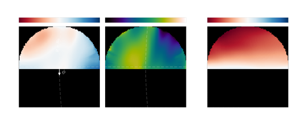
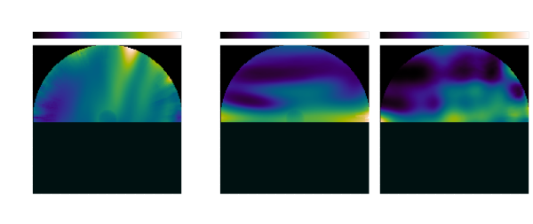
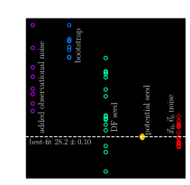
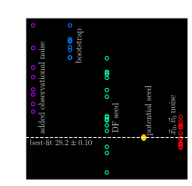
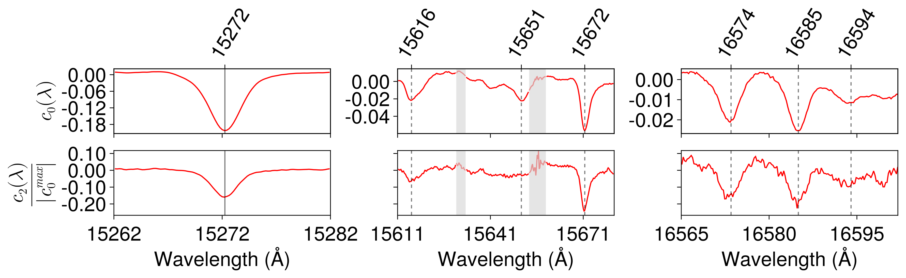

Milky Way Dust and Dynamics
Gregory M. Green, Max Planck Institute for Astronomy, Heidelberg
Königstuhl Colloquium
MPIA, 9 January 2026

MPIA Milky Way Dynamics Group
Supported by the Alexander von Humboldt Foundation & Max Planck Society
(Group Leader)


Why study Milky Way dynamics?
Dark-matter distribution
ΛCDM does well on large scales.
What about at sub-galactic scales?
Small-scale structure is sensitive to dark-matter properties.
What does dust have to do with this?
Mapping mass in the Milky Way
Gaia is delivering a snapshot of stellar positions and velocities: $\left\{ \vec{x} , \vec{v} \right\}$
Accelerations tell us about the potential: $$ \frac{\mathrm{d}\vec{v}}{\mathrm{d}t} = -\nabla \Phi \left( \vec{x} \right) \, . $$
$\mathrm{d}\vec{v}/\mathrm{d}t$ is only rarely observable (as of yet).
Knowing $\Phi\left(\vec{x}\right)$ would tell us the distribution of total mass (Baryonic + dark) in the Milky Way.
How to connect $\Phi\left(\vec{x}\right)$ with $\left\{ \vec{x} , \vec{v} \right\}$? Stationarity.
Stationarity assumption
Galaxy doesn't statistically change over time.
The most important equation in this talk
Collisionless Boltzmann Equation (CBE): $$ \frac{\mathrm{d}f}{\mathrm{d}t} = \frac{\partial f}{\partial t} \, + \!\!\! \sum_{\mathrm{dimension}\ i} \! \left( v_i \, \frac{\partial f}{\partial x_i} -\frac{\partial \Phi}{\partial x_i} \frac{\partial f}{\partial v_i} \right) = 0 \, . $$
$f\left(x,v\right)$ = density of stars in phase space (“distribution function”).
$\Phi\left(x\right)$ = gravitational potential.
Essentially just the continuity equation in phase space.
Goal: develop the most flexible method for determining $\Phi\left(x\right)$ from the observed distribution function $f\left(x,v\right)$.
1. Make full use of the rich phase-space data that Gaia is providing.
2. Make as few assumptions about the form of $\Phi\left(x\right)$ as possible.
We need to be able to calculate gradients of the distribution function:
$$ \require{color} \sum_{\mathrm{dimension}\ i} \! \left( v_i \, {\color{cyan} \frac{\partial f}{\partial x_i}} -\frac{\partial \Phi}{\partial x_i} {\color{cyan} \frac{\partial f}{\partial v_i}} \right) = 0 \, . $$
We need to be able to calculate gradients of the potential:
$$ \sum_{\mathrm{dimension}\ i} \! \left( v_i \, \frac{\partial f}{\partial x_i} -{\color{lightgreen} \frac{\partial \Phi}{\partial x_i}} \frac{\partial f}{\partial v_i} \right) = 0 \, . $$
⇒ Use machine-learning tools to model the distribution function and potential.
Method
“Deep Potential”

Fitting the distribution function

Normalizing flows
Invertible transformation: $\vec{x} \leftrightarrow \vec{y}$
$p \left( \vec{x} \right)$ is simple, but $p \left( \vec{y} \right)$ is complicated.
Allow sampling and evaluation of $p\left(\vec{y}\right)$.
FFJORD: Grathwohl+(2018), Finlay+(2020)
Computing gradients of the distribution function

Normalizing flows are differentiable.
In Tensorflow, it's as simple as
with tf.GradientTape() as g:
g.watch(eta)
f = flow(eta)
df_deta = g.gradient(f, eta)
Fitting the potential

Represent $\Phi$ as a neural network: $\Phi_{\theta} \left( \vec{x} \right)$.
⇒ auto-differentiable: $\frac{\partial \Phi}{\partial \vec{x}}$.
Find parameters $\theta$ that minimize non-stationarity:
$$ \require{color} \DeclareMathOperator*{\argmin}{arg\,min} \DeclareMathOperator*{\asinh}{asinh} \theta^{\ast} = \argmin_{\theta} \left< {\color{lightgreen} \asinh \left| \frac{\partial f_{\varphi^{\ast}}}{\partial t} \right| } + \lambda \, \asinh \left( \max \left\{ -\nabla^2 \Phi_{\theta} , \, 0 \right\} \right) \right>_{ \vec{x} , \vec{v} \, \sim \, f_{\varphi^{\ast}} } $$
Penalize negative mass densities:
$$ \require{color} \DeclareMathOperator*{\argmin}{arg\,min} \DeclareMathOperator*{\asinh}{asinh} \theta^{\ast} = \argmin_{\theta} \left< \asinh \left| \frac{\partial f_{\varphi^{\ast}}}{\partial t} \right| + {\color{red} \lambda \, \asinh \left( \max \left\{ -\nabla^2 \Phi_{\theta} , \, 0 \right\} \right) } \right>_{ \vec{x} , \vec{v} \, \sim \, f_{\varphi^{\ast}} } $$
Average over sample drawn from DF:
$$ \require{color} \DeclareMathOperator*{\argmin}{arg\,min} \DeclareMathOperator*{\asinh}{asinh} \theta^{\ast} = \argmin_{\theta} {\color{cyan} \left< {\color{white} \asinh \left| \frac{\partial f_{\varphi^{\ast}}}{\partial t} \right| + \lambda \, \asinh \left( \max \left\{ -\nabla^2 \Phi_{\theta} , \, 0 \right\} \right) } \right>_{ \vec{x} , \vec{v} \, \sim \, f_{\varphi^{\ast}} } } $$
Don't galaxies rotate?

Real galaxies are not stationary.
$$\frac{\partial f}{\partial t} \neq 0$$
Stationarity in a rotating frame:
$$ \frac{\partial f}{\partial t} + \left[ \vec{\Omega} \!\times\! \left( \vec{x}\!-\!\vec{x}_0 \right) \!+\! \vec{v}_0 \right] \!\cdot\! \frac{\partial f}{\partial \vec{x}} + \vec{\Omega} \!\times\! \left( \vec{v}\!-\!\vec{v}_0 \right) \!\cdot\! \frac{\partial f}{\partial \vec{v}} = 0 $$
⇒ Infer rotation: $\vec{\Omega}$.
Test on N-body simulation of a barred galaxy


Application to the Milky Way
<1 kpc
Data
Volume-complete, single-population stellar sample.
6D position + velocity measurements from Gaia.
5.6 million stars within 1 kpc of the Sun.

Completeness
Need unbiased population of kinematic tracers.
⇒ Model Gaia survey completeness.
Dust matters a lot!
Distribution function
Inferred acceleration
Inferred density

Parametric vs. Non‑parameteric
We can also fit parametric (analytic) potentials.
Non-stationarity
In general, no completely stationary solution exists.
The “phase spiral” appears in the non-stationarity.
 

Uncertainties
- observational noise
- shot noise (finite number of stars)
- random seeds used during training
- Position & velocity of Galactic Center
- ⋯
What if we don't know the selection function beforehand?


Need unbiased kinematic tracer population
Dust extinction, varying survey depth, etc. lead to complicated selection function.
⟵ Mock 3D dust distribution.
Mock selection function
Observed vs. true distribution function
$$ \color{gray} \underbrace{ \color{white} f_{\mathrm{obs}}\left(\vec{x},\vec{v}\right) }_{ \substack{\text{observed} \\ \text{distribution function}} } \hspace{-0.5em} \color{white} = \hspace{-1em} \color{gray} \overbrace{ \color{white} S\left(\vec{x}\right) }^{ \substack{\text{spatial} \\ \text{selection function}} } \hspace{-3em} \color{gray} \underbrace{ \color{white} f\left(\vec{x},\vec{v}\right) }_{ \substack{\text{true} \\ \text{distribution function}} } $$
Corrected collisionless Boltzmann equation
$$ v_i \frac{\partial}{\partial x_i} \left[ \ln f_{\mathrm{obs}}\left(\vec{x},\vec{v}\right) - { \color{cyan} \ln S\left(\vec{x}\right) } \right] - \frac{ \partial {\color{cyan} \Phi\left(\vec{x}\right)} }{ \partial x_i } \frac{ \partial \ln f_{\mathrm{obs}}\left(\vec{x},\vec{v}\right) }{ \partial v_i } = 0 $$
We can fit for both the selection function and potential
...because the 1st & 2nd terms depend differently on velocity.


Test on mock data with selection function
Recovery of selection function.
Recovery of density field.
Good recovery down to $p_{\mathrm{obs}} \sim 0.05$.
Can we avoid modeling the selection function altogether?
Use only information from $p\left(\vec{v}\mid\vec{x}\right)$, and infer the true density of tracers $n\left(\vec{x}\right)$.
The selection function is complicated, but the true tracer density is simple

We are poised to apply these improved methods to Gaia data.
Gaia data will get even better
- DR3 (June 2022): 34 months of data.
- DR4 (late 2026): 66 months of data, many more raw spectra.
- DR5 (2030?): 120 months of data.
Error scalings with survey time:
$\sigma_{\varpi} \propto T^{-1/2}$. DR5 parallax errors ~50% of DR3.
$\sigma_{\mu} \propto T^{-3/2}$. DR5 proper-motion errors ~15% of DR3.
Interstellar dust
“Hier ist wahrhaftig ein Loch im Himmel!”- F. W. Herschel, 1774
Interstellar space contains
Gas
(H, He, H2, CO, ...)

(Hα emission, D. Finkbeiner)
“Dust”
(small solid particles, <1 μm)

(interplanetary dust grain, D. Brownlee & E. Jessberger )

Extinction & reddening
Wavelength-dependent “extinction curve”: $$ A\left(\lambda\right) = -2.5 \log_{10} \left[ \frac{ f_{\mathrm{obs}}\left(\lambda\right) }{ f_{\mathrm{intr}}\left(\lambda\right) } \right] \, . $$
More extinction at shorter wavelengths: ”reddening.”
The ”extinction curve” contains information about dust composition.
The extinction curve as a diagnostic
Dust is crucial for understanding...


{kind=link}
Goal of dust mapping
Map the wavelength-dependent extinction of dust in 3D throughout the Milky Way:
$$ A( \hspace{-1.2em} { \color{gray} \underbrace{ { \color{white} \lambda } }_{\mathrm{wavelength}} } \hspace{-1.2em}, \hspace{-0.6em} { \color{gray} \overbrace{ { \color{white} \ell, b, r } }^{\mathrm{3D\ position}} } \hspace{-0.6em} ) $$
...in order to correct for its observational effects
...and to understand the physical properties of dust
...and study the interstellar medium.
Mapping dust in 3D
Mapping dust in 3D with stars
Mapping dust along one sightline


Repeat across millions of sightlines...
 


Face-on view of Milky Way dust
Limitation: the “pencil-beam” effect.
Low distance resolution vs. high angular resolution.

A 3D dust map with Gaussian-process regularization (Edenhofer et al. 2024).
What about the extinction curve?
Almost all dust maps to date essentially measure dust density: $$ \rho_{\mathrm{dust}}\left(\ell,b,r\right) \sim \frac{\mathrm{d}}{\mathrm{d}r} \underbrace{ \vphantom{\frac{\mathrm{d}}{\mathrm{d}r}} A\left(\ell, b, r\right) }_{ \substack{\mathrm{extinction\ in}\\\mathrm{some\ band}\vphantom{\large X}} } \, . $$
The extinction curve $A(\lambda, \ell, b, r)$ contains information about the physical properties of dust.
The extinction curve and grain-size distribution
Previous measurements with 100s of hot O/B stars
High spectral-resolution extinction curves along a limited number of sightlines.
Not enough spectra to map the extinction curve.
The Gaia camera


How to extract information from XP spectra?


Example: distance vs. extinction towards Orion B
High-quality parameters for >100 million stars.
(Used by Edenhofer et al. 2024 dust map)
Learned extinction curve


130 million high-quality R(V) determinations
Orders of magnitude more measurements than ever before.


R(V) in the Galactic plane
High R(V) correlated with star formation?


R(V) vs. extinction in individual clouds
Previously unexpected U-shaped trend observed in many clouds.
R(V) in the Magellanic Clouds


(Several PAHs from PAHdb)
Polycyclic Aromatic Hydrocarbons (PAHs)
Abundant in the interstellar medium.
π→π* electronic transitions in the UV (responsible for 2175 Å extinction feature?).
May play a larger role in R(V) variation than previously thought:
Going beyond R(V): higher-order variations
The extinction curve is usually parameterized by R(V), but can we find additional degrees of freedom?

Decomposition: $ \displaystyle r_{ \hspace{-0.7em} \underset{\scriptstyle\color{cyan}\text{star}}{\underset{\color{cyan}\uparrow}{i}} } \hspace{-0.6em} \left(\lambda\right) = \sum_{ \hspace{-2.0em} \underset{\scriptstyle\color{cyan}\text{component}}{\underset{\color{cyan}\uparrow}{k}} \hspace{-2.0em} =1 }^{16} \hspace{-1.0em} \overset{\color{cyan}\text{coefficients}}{\overset{\color{cyan}\bigg\downarrow}{ b_{ik} }} \hspace{-0.7em} \overset{\color{cyan}\text{basis}}{\overset{\color{cyan}\downarrow}{ g_k\!\left(\lambda\right) }} $ .
Going beyond R(V): higher-order variations


A new broad feature at ~850 nm
Confirmation of broad feature at ~770 nm
All of these feature are of unknown origin.
...but they appear to correlate with diffuse interstellar bands (DIBs).
(Saydjari & Green, arXiv:2507.07162)
We now have a vast quantity of empirical measurements of extinction curves.
Theory will have to catch up.
...And we can expand this work across the spectrum.